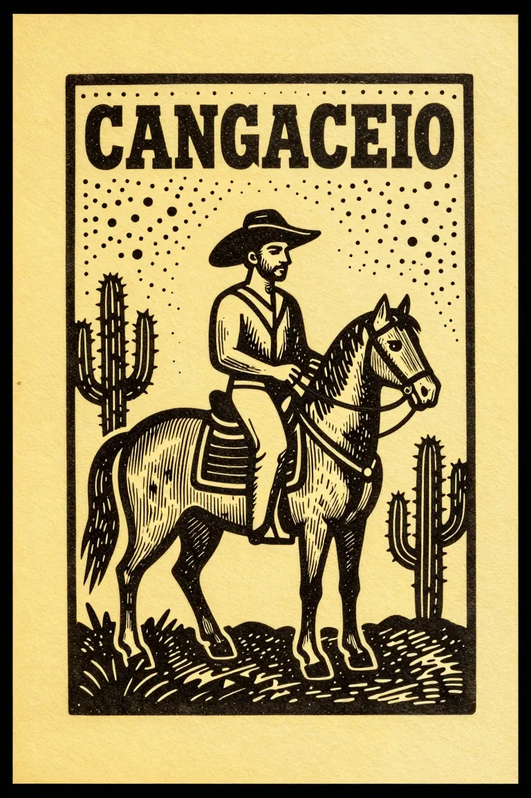

печать · c.1900–present · также: Ксилография корделя, Xilogravura de cordel, Обложка literatura de cordel
Ксилография для обложки книжки-кордель: дешёвой брошюры со стихами, которую вешают на верёвку. Резчик работает по мягкому дереву, оставляя смелые белые линии, плоские формы и одну чёрную краску.

Главная идея
Одна ксилография на дешёвой обложке способна рассказать всю историю стиха одной смелой картинкой.
Принципы дизайна
Режьте доску из мягкого дерева ножом и стамеской.
Делайте сцену сильной и простой: герой, зверь, святой или бандит, анфас или в профиль.
Берите густую чёрную массу с белым контуром и повторяющийся узор на фоне.
Вырезайте название в доске простыми блочными буквами или набирайте шрифтом.
Печатайте чёрным на цветной бумажной обложке; бумага даёт второй цвет.